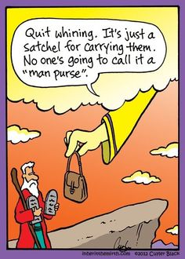

The Product commandments
Having a set of rules, principles or commandments can really help to determine the right trade-offs and priorities within your product or service.
"The product commandments are a public declaration of your beliefs and intentions."
Make difficult decisions a bit easier
There will be many instances when tough decisions have to be made. Having a good set of product commandments can really help to speed up the process of product discovery. Keep in mind that product commandments is not a list of product requirements, it's of a higher strategic order. The commandments help to make important decisions down the road about product requirements. It's not enough to only list your product commandments, you have to make it a prioritized list.
Be specific
Try to formulate your commandments as useful as possible. This means: not too generic. The commandments will help when tough discussions are preventing the team from moving forward. In those discussions, you as a product manager, can help by asking the following questions:
What problem exactly are you trying to solve?
Who exactly are you trying to solve this problem for - which persona?
What are the goals you are trying to satisfy with this product?
What is the relative priority of each goal? (How do they relate to the product commandments?)
TL;DR
It's really important to take prioritization seriously. Make it as transparent as possible. Get the team to agree on a specific ordering before moving on. If you skip this step you won't have a common basis (the set of commandments) to fall back on for evaluation of the different opinions and arguments.